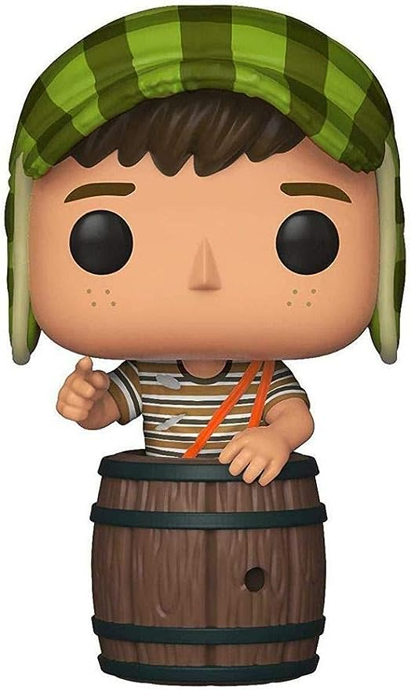

Coraline
O Funko Pop! da Coraline é uma figura colecionável que retrata a protagonista do filme "Coraline e o Mundo Secreto" (Coraline in the Coraline), que é baseado no livro de Neil Gaiman.
Saiba mais
Homem aranha
O Funko Pop! do Homem-Aranha é uma figura colecionável que representa o famoso super-herói da Marvel Comics. Clique em Saiba mais
Saiba mais

Chaves
O Funko Pop! do Chaves é uma figura colecionável que homenageia o icônico personagem de Roberto Gómez Bolaños da série "Chaves".
Saiba mais